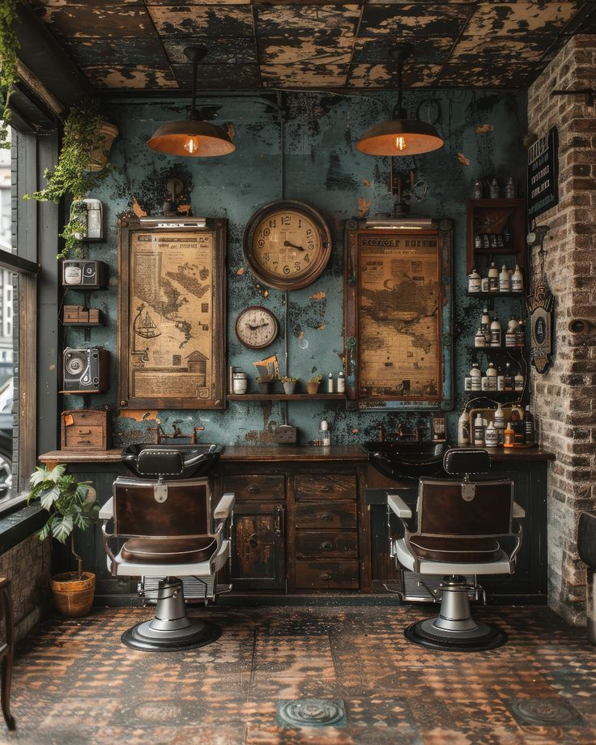

About Us

Ahoy Barbershop: The Best Barbershop in The Coastal Town Since 2024
Established in 2024 by Captain Jack who grew up by the sea and fascinated by ships and the tales of old sailors. His grandfather, a skilled barber, taught him the art of grooming, blending precision with care. As Jack grew, his love for barbering and the ocean merged into a single dream. Years later, in a quaint coastal town, Jack opened Ahoy Barbershop. With ship-themed decor, maritime music, and the finest grooming services, it became a haven where customers could escape the ordinary and embark on a grooming adventure.
Due to its recent opening, Ahoy Barbershop has quickly become the main destination for male’s hair care. Known for the best service, comfortable atmosphere, and extraordinary experience, Ahoy Barbershop has built a reputation as the best barbershop that provides customer satisfaction. Every customer who comes to Ahoy Barbershop not only gets a haircut, but also a quality grooming experience. With a team of professional barbers, Ahoy Barbershop ensures that every customer feels satisfied and confident with their new appearance. Whether for classic haircuts, modern styles, or other grooming treatments, Ahoy Barbershop always provides the best results. This place is the right choice for those who want quality, comfort and an extraordinary experience in one visit.